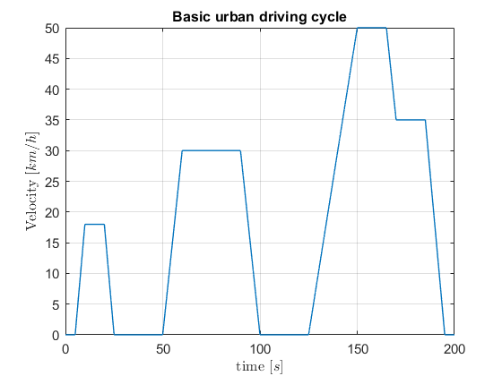
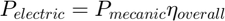
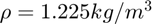
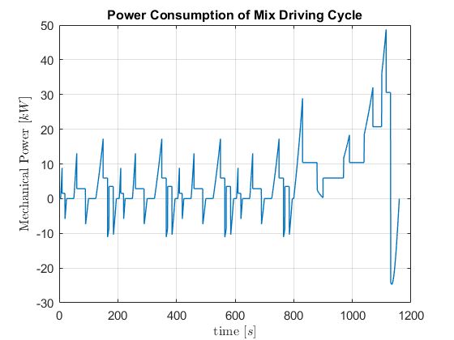
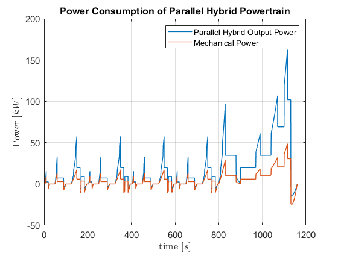

Powertrains Problem
Contents
- Drawing the two driving cycles
- Vehicles Configurations and assumptions
- Assumptions: Pure Electric Powertrain
- Assumptions: Series Hybrid Powertrain
- Assumptions: Parallel Hybrid Powertrain
- Assumptions: Pure Combustion Powertrain
- Power Consumption
- Power Consumption: Theoretical Approach
- Power Consumption: Computations Function
- Power Consumption: Show Results Function
- Power Consumption: Basic Driving Cycle
- Power Consumption: Pure electric in Basic Driving Cycle
- Power Consumption: Series Hybrid in Basic Driving Cycle
- Power Consumption: Parallel Hybrid in Basic Driving Cycle
- Power Consumption: Pure Combustion in Basic Driving Cycle
- Power consumption: Mixed Driving Cycle
- Power Consumption: Pure electric in Mix Driving Cycle
- Power Consumption: Series Hybrid in Mix Driving Cycle
- Power Consumption: Parallel Hybrid in Mix Driving Cycle
- Power Consumption: Pure Combustion in Mix Driving Cycle
- Power Consumption: Comparison
- Energy Recovery
- Energy Recovery: Theorethical approach
- Energy Recovery: Computations function
- Energy Recovery: Pure electric Powertrain Basic Driving Cycle
- Energy Recovery: Series Hybrid Powertrain Basic Driving Cycle
- Energy Recovery: Parallel Hybrid Powertrain Basic Driving Cycle
- Energy Recovered: Conclusion Basic Cyle
- Energy Recovery: Pure electric Powertrain Mix Driving Cycle
- Energy Recovery: Series Hybrid Powertrain Mix Driving Cycle
- Energy Recovery: Parallel Hybrid Powertrain Mix Driving Cycle
- Energy Recovered: Conclusion Mix Cyle
- Economic Comparison
- Economic comparison: Conclusions
- Discussing Solutions
Drawing the two driving cycles
In order to perform this study, the driving cycles were ploted in matLab. Two types of driving cycles were used:
Basic urbarn driving cycle
clear close all clc [basic_time, basic_velocity] = BasicDrivingCycle(); figure(); plot(basic_time, basic_velocity, 'LineWidth', 1); set( gca, 'FontSize', 11); grid on; title('Basic urban driving cycle'); xlabel('time $[s]$','Interpreter', 'latex'); ylabel('Velocity [$km/h$]','Interpreter', 'latex');
Mix driving cycle
Note that the Mix-driving cycle is composed of urban and extra-urban driving cycles, being the first the concatenation of basic urban driving cycles.
[mix_time, mix_velocity] = MixDrivingCycle(basic_time, basic_velocity); figure() plot(mix_time, mix_velocity, 'LineWidth', 1); set( gca, 'FontSize', 11); grid on; title(' Mix-driving cycle'); xlabel('time $[s]$','Interpreter', 'latex'); ylabel('Velocity [$km/h$]','Interpreter', 'latex');
Vehicles Configurations and assumptions
In the study there are 4 possible powertrain configurations of light duty urban vehicles, presented in the figures (1), (2), (3) and (4). They consist of pure electric, pure combustion, series hybrid and paralel hybrid.
Assumptions: Pure Electric Powertrain
In this configuration the battery is in series with the electric motor/generator in series with the transmission. There are two possible modes of functioning, the motor discharging the velocities while accelerating, and the opposite, generator charging the velocities decelerating.
Acceleration: During discharge the ciruit has an efficiency different from 100%. The overalll efficiecy  is given by the product of the individual effinciency of each component of the circuit.
is given by the product of the individual effinciency of each component of the circuit.
 .
.
Thus, for this powertrain, one has that [ ] will translate in a overall efficiency given by:
- Assuming that the velocities are made from lithium-ion, according to https://en.wikipedia.org/wiki/Lithium-ion_battery it is reasonable to assume that the discharging effinciency of the battery of around 80%;
- From https://en.wikipedia.org/wiki/Electric_car#Energy_efficiency it is reasonable to assume that the electric motor has an efficiency of 70%;
- From https://www.nap.edu/read/21744/chapter/7 it is resonable to assume that the efficiency of an automatic transmission is 90%; So the the overall discharging performance can be computed:
efficiency_battery_discharge = 0.8; efficiency_transmission = 0.9; efficiency_motor = 0.8; efficiency_pure_electric_discharging = efficiency_battery_discharge*efficiency_motor*efficiency_transmission;
Thus the electric power in acceleration is given by:
Deceleration During deceleration, it is assumed that the motor works as a generator, recharging the battery. Although it is the same path as acceleration [ ], the efficiencies have different values.
- From it is reasonable to assume that the discharging effinciency of the battery of around 90%;
- Its is reasonable to assume that the generator has an efficiency of 80%;
- Similarly to the accelaration, it is reasonable to assume that the transmission has an efficiency of 90%; So the the overall charging performance can be computed:
efficiency_battery_charge = 0.9; efficiency_transmission = 0.9; efficiency_generator = 0.7; efficiency_pure_electric_charging = efficiency_battery_charge*efficiency_generator*efficiency_transmission;
Thus the electric power in deceleration is given by:

Assumptions: Series Hybrid Powertrain
In the configuration, there is a series connection between the fuel, the diesel generator, the battery pack, the motor/generator, and the transmission. Knowing that combustion engines only have a good performace in a narrow rpm band, called power band, it is assumed that, similiar do hybrid cars in the market, the car can operate in pure electric mode for a velocities under 50 km/h and as a hybrid for highier velocities. (Good explanation on hybrid here https://www.youtube.com/watch?v=E_xCssR8qQI) The electric mode has the same efficiency as the pure electric powertrain, So the efficiency of this power train can be:
- In electrical mode, the
 ;
; - According to https://en.wikipedia.org/wiki/Diesel_generator, it is reasonable to assume that the performance of the diesel generator is 65%;
Thus the overall performance is given by:
- , when

- , when

efficiency_diesel_generator = 0.65; efficiency_hybrid_series_electric_charging = efficiency_pure_electric_charging; efficiency_hybrid_series_discharging = efficiency_pure_electric_discharging*efficiency_diesel_generator;
Assumptions: Parallel Hybrid Powertrain
The parallel power train, there are two paths from the power source to the wheels:
- The series between the fuel, the engine and the transmisson;
- The series between the battery, the motor/generator and the transmission;
It is no notice that the engine can act on the generator in order to charge the battery if needed. So, with this set up, we can consider that for velocities up to 20 km/h, the powertrain functions in pure electric mode, for velocities greater than 40 km/h it works on pure combustion engine, for velocities in between 20 and 40 km/h it demands half the power from the bateries and half from combustion. For breaking it is assumed that regenerative breaking allways works. With this, the efficiencies considered are:
- According to https://en.wikipedia.org/wiki/Engine_efficiency, it is considered that the motor is running on diesel engine, being of 30%.
- The electric path has the same efficiency as the pure electric powertrain.
efficiency_hybrid_parallel_electric_charging = efficiency_pure_electric_charging; efficiency_hybrid_parallel_electric_discharging = efficiency_pure_electric_discharging; efficiency_hybrid_parallel_combustion_discharging = 0.30;
Assumptions: Pure Combustion Powertrain
This powertrain is fairly straight forward, being it's efficiency just the efficiency of the diesel motor.
efficiency_pure_combustion_discharging = 0.30;
Power Consumption
Power Consumption: Theoretical Approach
In this section it is of interest to compare the power consumption between the different powertrains.
The objective os to calculate:

So, first, one must consider the traction force on each car. The forces present are:
- Motor force;
- Drag force;
- Friction force;
Being:
;  densidade do meio;
densidade do meio;  aerodynamic drag coefficient; A frontal surface area;
aerodynamic drag coefficient; A frontal surface area;  wind speed; rolling resistance coefficient;
wind speed; rolling resistance coefficient;  and
and  mass a gravity;
mass a gravity;
Considering , , and using the constant values from the table(I) of the laboratory script, one can compute the values of .
air_density = 1.225; mass_factor = 1.05; drag_coefficient = 0.25; surface_area = 2.7; wind_speed = (25/3.6); rolling_resistance_coefficient = 0.018; mass = 1400; gravity = 9.8;
Power Consumption: Computations Function
Function used to calculate the evolution of the powers in the driving cycles:
function [power] = AuxPowerCalculator(mechanical_power, velocity, power, efficiency_breaking, efficiency_mode_1, efficiency_mode_2) for i=1:length(mechanical_power) % When the system is breaking if(mechanical_power(i) < 0) power(i) = mechanical_power(i) * efficiency_breaking; continue end % When the system's velocity is under 20km/h and not breaking if(velocity(i)*3.6 < 20) power(i) = mechanical_power(i) / efficiency_mode_1; end % When system is between 20 and 40 km/h if(velocity(i)*3.6 >= 20 && velocity(i)*3.6 <= 40) power(i) = (mechanical_power(i)/2) / (efficiency_mode_2) + (mechanical_power(i)/2) / (efficiency_mode_1); end if(velocity(i)*3.6 > 40) power(i) = mechanical_power(i) / efficiency_mode_2; end end end
Power Consumption: Show Results Function
In order to more easily show the results of each system, the mechanical power and the system output power are ploted at the same time, in order to better see the effect of the different efficiencies: For that, the following function was created
function [] = AuxShowPowerResults(time, power, mechanical_power, power_train) figure() plot(time, power/1000, time, mechanical_power/1000, 'LineWidth', 1); set( gca, 'FontSize', 11); title(sprintf('Power Consumption of %s Powertrain', power_train)); xlabel('time $[s]$','Interpreter', 'latex'); ylabel('Power [$kW$]','Interpreter', 'latex'); legend( sprintf('%s Output Power', power_train), 'Mechanical Power'); grid on; end
Power Consumption: Basic Driving Cycle
Given the theoretical and functional approach taken above, the power consumption can be computed. First the acceleration vector is necessary in order to compute the force.
The basic velocity must be converted from  to :
to :
basic_velocity = basic_velocity/3.6; time_step = basic_time(4) - basic_time(3); basic_acceleration = diff(basic_velocity)/time_step; % It is necessary to pop the last value of the time and velocity arrays due % to the previous derivative: basic_time(end) = []; basic_velocity(end) = []; figure(); plot(basic_time, basic_acceleration, 'LineWidth', 1); set( gca, 'FontSize', 11); title('Acceleration of Basic Driving Cycle'); xlabel('time $[s]$','Interpreter', 'latex'); ylabel('Acceleration [$m/s^2$]','Interpreter', 'latex'); grid on;
The mechanical power involved is computed by:
force_motor = mass_factor * mass * basic_acceleration; force_drag = 0.5 * air_density * drag_coefficient * surface_area * (basic_velocity + wind_speed).^2; force_friction = rolling_resistance_coefficient * mass * gravity; force_traction = force_motor + force_drag + force_friction; mechanical_power_basic_cycle = force_traction.*basic_velocity; figure(); plot(basic_time, mechanical_power_basic_cycle/1000, 'LineWidth', 1); set( gca, 'FontSize', 11); title('Power Consumption of Basic Driving Cycle'); xlabel('time $[s]$','Interpreter', 'latex'); ylabel('Mechanical Power [$kW$]','Interpreter', 'latex'); grid on;
It is to notice that the negative values of power correspond to power from breaking, this power is used by the regenerative breaking (if in operation).
Power Consumption: Pure electric in Basic Driving Cycle
Now, in order to calculate the power consumption carried by the pure electric power train. It will work in the follwing manner:
- When the car is accelerating, the efficiency of discharged is applied in the power calculation;
- When the car is decelerating, the efficiency of the charge is applied in the power calculation;
Thus, for the pure electric powertrain the power is given by:
pure_electric_power_basic_cycle = zeros(1, length(mechanical_power_basic_cycle));
pure_electric_power_basic_cycle = AuxPowerCalculator(mechanical_power_basic_cycle, basic_velocity, pure_electric_power_basic_cycle, efficiency_pure_electric_charging, efficiency_pure_electric_discharging, efficiency_pure_electric_discharging);
AuxShowPowerResults(basic_time, pure_electric_power_basic_cycle, mechanical_power_basic_cycle, 'Pure electric');
As one can see on the figure above, as expected the electrical power consuption is greater than the mechanical power consumption, and I doesn't regenerate all the power available in the regenerative-breaking periods.
Power Consumption: Series Hybrid in Basic Driving Cycle
series_hybrid_electric_power_basic_cycle = zeros(1, length(basic_acceleration));
series_hybrid_electric_power_basic_cycle = AuxPowerCalculator(mechanical_power_basic_cycle, basic_velocity,series_hybrid_electric_power_basic_cycle, efficiency_hybrid_series_electric_charging, efficiency_hybrid_series_discharging, efficiency_hybrid_series_discharging);
AuxShowPowerResults(basic_time, series_hybrid_electric_power_basic_cycle, mechanical_power_basic_cycle, 'Series Hybrid');
As expected, the power consumption of the hybrid powertrain is greater than that of the pure electric powertrain mesured earlier.
Power Consumption: Parallel Hybrid in Basic Driving Cycle
This power train will behave in the following manner:
- When the velocity is less than , the car will run on electric power only;
- When the car reaches the mark, it will demand half the energy from the bateries and half the energy from the combustion engine;
- Finally, with velocities over 40 km/h, the car will run on combustion power only;
parallel_hybrid_electric_power_basic_cycle = zeros(1, length(basic_acceleration));
parallel_hybrid_electric_power_basic_cycle = AuxPowerCalculator(mechanical_power_basic_cycle, basic_velocity, parallel_hybrid_electric_power_basic_cycle, efficiency_hybrid_parallel_electric_charging, efficiency_hybrid_parallel_electric_discharging , efficiency_hybrid_parallel_combustion_discharging);
AuxShowPowerResults(basic_time, parallel_hybrid_electric_power_basic_cycle, mechanical_power_basic_cycle, 'Parallel Hybrid');
As expected, for velocities under 20 km/h, the parallel powertrain has the same consumption as the pure electric powertrain, however, when the velocity reaches 20 km/h the performace decreases due to the combustion engine, and it decreases even more when the car reaches the velocities of 40 km/h.
Power Consumption: Pure Combustion in Basic Driving Cycle
The power combustion power will have allways the same efficiency when it is accelerating, and during breaking it will not spend or restore any energy.
pure_combustion_power_basic_cycle = zeros(1, length(mechanical_power_basic_cycle));
pure_combustion_power_basic_cycle = AuxPowerCalculator(mechanical_power_basic_cycle, basic_velocity, pure_combustion_power_basic_cycle, 0, efficiency_pure_combustion_discharging , efficiency_pure_combustion_discharging);
AuxShowPowerResults(basic_time, pure_combustion_power_basic_cycle, mechanical_power_basic_cycle, 'Pure Combustion');
As expected when the mechanical power is zero or negative, the combustion power will be zero.
Power consumption: Mixed Driving Cycle
Similar to what was done for the basic driving cycle, the acceleration and the mechanical power wil be computed, and then through the AuxPowerCalculator() function, the power consumption of each power train will be studied.
mix_velocity = mix_velocity/3.6; time_step = mix_time(4) - mix_time(3); mix_acceleration = diff(mix_velocity)/time_step; % It is necessary to pop the last value of the time and velocity arrays due % to the previous derivative: mix_time(end) = []; mix_velocity(end) = []; figure(); plot(mix_time, mix_acceleration, 'LineWidth', 1); set( gca, 'FontSize', 11); title('Acceleration of Mix Driving Cycle'); xlabel('time $[s]$','Interpreter', 'latex'); ylabel('Acceleration [$m/s^2$]','Interpreter', 'latex'); grid on;
The forces involved in the system remain the same, thus, the mechanical power can be computated:
force_motor = mass_factor * mass * mix_acceleration; force_drag = 0.5 * air_density * drag_coefficient * surface_area * (mix_velocity + wind_speed).^2; force_friction = rolling_resistance_coefficient * mass * gravity; force_traction = force_motor + force_drag + force_friction; mechanical_power_mix_cycle = force_traction.*mix_velocity; figure(); plot(mix_time, mechanical_power_mix_cycle/1000, 'LineWidth', 1); set( gca, 'FontSize', 11); title('Power Consumption of Mix Driving Cycle'); xlabel('time $[s]$','Interpreter', 'latex'); ylabel('Mechanical Power [$kW$]','Interpreter', 'latex'); grid on;
The powertrains will mantain the same efficiencies as before, during the urban part of the cycle, but new conclusion will be drawn once the car reaches the extra-urban part of the cycle.
Power Consumption: Pure electric in Mix Driving Cycle
pure_electric_power_mix_cycle = zeros(1, length(mechanical_power_mix_cycle));
pure_electric_power_mix_cycle = AuxPowerCalculator(mechanical_power_mix_cycle, mix_velocity, pure_electric_power_mix_cycle, efficiency_pure_electric_charging, efficiency_pure_electric_discharging, efficiency_pure_electric_discharging);
AuxShowPowerResults(mix_time, pure_electric_power_mix_cycle, mechanical_power_mix_cycle, 'Pure electric');
Power Consumption: Series Hybrid in Mix Driving Cycle
series_hybrid_electric_power_mix_cycle = zeros(1, length(mix_acceleration));
series_hybrid_electric_power_mix_cycle = AuxPowerCalculator(mechanical_power_mix_cycle, mix_velocity,series_hybrid_electric_power_mix_cycle, efficiency_hybrid_series_electric_charging, efficiency_hybrid_series_discharging, efficiency_hybrid_series_discharging);
AuxShowPowerResults(mix_time, series_hybrid_electric_power_mix_cycle, mechanical_power_mix_cycle, 'Series Hybrid');
Power Consumption: Parallel Hybrid in Mix Driving Cycle
parallel_hybrid_electric_power_mix_cycle = zeros(1, length(mix_acceleration));
parallel_hybrid_electric_power_mix_cycle = AuxPowerCalculator(mechanical_power_mix_cycle, mix_velocity, parallel_hybrid_electric_power_mix_cycle, efficiency_hybrid_parallel_electric_charging, efficiency_hybrid_parallel_electric_discharging , efficiency_hybrid_parallel_combustion_discharging);
AuxShowPowerResults(mix_time, parallel_hybrid_electric_power_mix_cycle, mechanical_power_mix_cycle, 'Parallel Hybrid');
 Power Consumption: Pure Combustion in Mix Driving Cycle
pure_combustion_power_mix_cycle = zeros(1, length(mix_acceleration));
pure_combustion_power_mix_cycle = AuxPowerCalculator(mechanical_power_mix_cycle, mix_velocity, pure_combustion_power_mix_cycle, 0, efficiency_pure_combustion_discharging, efficiency_pure_combustion_discharging);
AuxShowPowerResults(mix_time, pure_combustion_power_mix_cycle, mechanical_power_mix_cycle, 'Pure Combustion');
Power Consumption: Comparison
In order to better visualize the comparison of all systems, the following plot shows all power consumptions side to side:
figure() hold all plot(basic_time, pure_electric_power_basic_cycle/1000, 'LineWidth', 1); plot( basic_time, pure_combustion_power_basic_cycle/1000, 'LineWidth', 1); plot( basic_time, series_hybrid_electric_power_basic_cycle/1000, 'LineWidth', 1); plot( basic_time, parallel_hybrid_electric_power_basic_cycle/1000, 'LineWidth', 1); set( gca, 'FontSize', 11); title('All Systems Power Consumption on Basic Driving Cycle'); xlabel('time $[s]$','Interpreter', 'latex'); ylabel('Power [$kW$]','Interpreter', 'latex'); legend('Pure electric', 'Pure Combustion', 'Series Hybrid', 'Parallel Hybrid'); grid on;
One can see that, for the basic driving cycle, the combustion powertrain performs worse when compared to the electric and hybrid powertrains, due to the intrinsic low efficiency of the diesel motor. For speed under 20 km/h, the electric and the paralel hybrid perform the same way, given that in the speed range from 0 to 20 km/h they all function with a pure electric powertrain. One can see that the once the velocity reaches the 20 km/h mark, the combustion engine starts providing half the energy, therefore increasing the power consumption. Finally the speed reaches 40 km/h the parallel hybrid work on pure combustion engine, presenting the same power consumption as a pure combustion car. The series hybrid powertrain performs allways in between the pure electric and the pure combustion car. In comparison to the parallel hybrid, the series performs better for low speeds and worse for higher speeds, that is due to the combustion power in the electric being more active with the increasing velocity.
figure() hold all plot( mix_time, pure_combustion_power_mix_cycle/1000); plot(mix_time, pure_electric_power_mix_cycle/1000); plot( mix_time, series_hybrid_electric_power_mix_cycle/1000); plot( mix_time, parallel_hybrid_electric_power_mix_cycle/1000); set( gca, 'FontSize', 11); title('All Systems Power Consumption on Mix Driving Cycle'); xlabel('time $[s]$','Interpreter', 'latex'); ylabel('Power [$kW$]','Interpreter', 'latex'); legend('Pure Combustion','Pure electric', 'Series Hybrid', 'Parallel Hybrid'); grid on;
Finally, in the mixed driving cycle, one can observe that for the urban part of the cycle, the conclusions drawn for the basic driving cycle are valid here. For the extra-urban part of the cycle, one can notice that:
- As always, the pure electric car has the best performace of all the power trains;
- Next comes the series hybrid, that has it's efficiency diminished due presence of the diesel generator, that for these speeds powers the battery;
- Finally, the paralel hybrid and the pure combustion powertrains perfom the worst, due to the low efficiency of the diesel motor;
Energy Recovery
The powertrains that have an electric motor/generator, can harnest the power of the breaking to restore the energy in the velocities. In this section, the quantity of this saved energy will be studied for each powertrains in each driving cycle.
Energy Recovery: Theorethical approach
The energy recovered will correspond to the negative part of the graphics of the powerconsumption calculated above. It is to notice that the efficiency of charging is not the same as discharging, due to, bettwen other factors related to the components, losses by heat. As it is expected, the pure combustion powertrain does not have negative power consumption, because it does not have the components to restore energy. So in order to compute the total recovered energy, one must simply integrate the negative part of the power consumption graphs.
Energy Recovery: Computations function
The function used to compute the power recovery is the following:
function [energy_recovered, energy_spent] = AuxEnergyRecoveryCalculator(time, power_consumption) % Filter only the negative values of the plot and pass them to positive % value power_recovered = power_consumption; power_spent = power_consumption; % Energy recovered for i=1:length(power_consumption) if(power_recovered(i) > 0) power_recovered(i) = 0; else power_recovered(i) = -power_recovered(i); end end energy_recovered = trapz(time, power_recovered); % Energy spent for i=1:length(power_consumption) if(power_spent(i) < 0) power_spent(i) = 0; end end energy_spent = trapz(time, power_spent); end
Energy Recovery: Pure electric Powertrain Basic Driving Cycle
[energy_recovered_basic_cycle, energy_spent_basic_cycle] = AuxEnergyCalculator(basic_time, pure_electric_power_basic_cycle);
For the basic driving cycle, the energy spent, in kWh equal to:
display(energy_spent_basic_cycle/(1000*3600));
0.2570
And the energy recovered, in kWh is equal to:
display(energy_recovered_basic_cycle/(1000*3600));
0.0245
One can conclude that the percentage of the energy recovered by this powertrain is:
display((energy_recovered_basic_cycle/energy_spent_basic_cycle)*100);
9.5238
Energy Recovery: Series Hybrid Powertrain Basic Driving Cycle
[energy_recovered_basic_cycle, energy_spent_basic_cycle] = AuxEnergyCalculator(basic_time, series_hybrid_electric_power_basic_cycle);
For the basic driving cycle, the energy spent, in kWh equal to:
display(energy_spent_basic_cycle/(1000*3600));
0.3955
And the energy recovered, in kWh is equal to:
display(energy_recovered_basic_cycle/(1000*3600));
0.0245
One can conclude that the percentage of the energy recovered by this powertrain is:
display((energy_recovered_basic_cycle/energy_spent_basic_cycle)*100);
6.1904
Energy Recovery: Parallel Hybrid Powertrain Basic Driving Cycle
[energy_recovered_basic_cycle, energy_spent_basic_cycle] = AuxEnergyCalculator(basic_time, parallel_hybrid_electric_power_basic_cycle);
For the basic driving cycle, the energy spent, in kWh equal to:
display(energy_spent_basic_cycle/(1000*3600));
0.3905
And the energy recovered, in kWh is equal to:
display(energy_recovered_basic_cycle/(1000*3600));
0.0245
One can conclude that the percentage of the energy recovered by this powertrain is:
display((energy_recovered_basic_cycle/energy_spent_basic_cycle)*100);
6.2682
Energy Recovered: Conclusion Basic Cyle
For this driving cycle, pure electric powertrain perfomed better, with ~9.5% of energy recovery, followed by the series hybrid which recovered ~6.2%, followed by the parallel hybrid which recovered ~6.3% and last the pure combustion which can't recover any energy. Even though the hybrids and the electric recover energy the same way, the reason that they show a different value in the percentage of energy recovered is because they spend different amounts.
Energy Recovery: Pure electric Powertrain Mix Driving Cycle
[energy_recovered_mix_cycle, energy_spent_mix_cycle] = AuxEnergyCalculator(mix_time, pure_electric_power_mix_cycle);
For the mix driving cycle, the energy spent, in kWh equal to:
display(energy_spent_mix_cycle/(1000*3600));
3.2611
And the energy recovered, in kWh is equal to:
display(energy_recovered_mix_cycle/(1000*3600));
0.1774
One can conclude that the percentage of the energy recovered by this powertrain is:
display((energy_recovered_mix_cycle/energy_spent_mix_cycle)*100);
5.4396
Energy Recovery: Series Hybrid Powertrain Mix Driving Cycle
[energy_recovered_mix_cycle, energy_spent_mix_cycle] = AuxEnergyCalculator(mix_time, series_hybrid_electric_power_mix_cycle);
For the mix driving cycle, the energy spent, in kWh equal to:
display(energy_spent_mix_cycle/(1000*3600));
5.0171
And the energy recovered, in kWh is equal to:
display(energy_recovered_mix_cycle/(1000*3600));
0.1774
One can conclude that the percentage of the energy recovered by this powertrain is:
display((energy_recovered_mix_cycle/energy_spent_mix_cycle)*100);
3.5358
Energy Recovery: Parallel Hybrid Powertrain Mix Driving Cycle
[energy_recovered_mix_cycle, energy_spent_mix_cycle] = AuxEnergyCalculator(mix_time, parallel_hybrid_electric_power_mix_cycle);
For the mix driving cycle, the energy spent, in kWh equal to:
display(energy_spent_mix_cycle/(1000*3600));
5.8156
And the energy recovered, in kWh is equal to:
display(energy_recovered_mix_cycle/(1000*3600));
0.1774
One can conclude that the percentage of the energy recovered by this powertrain is:
display((energy_recovered_mix_cycle/energy_spent_mix_cycle)*100);
3.0503
Energy Recovered: Conclusion Mix Cyle
As expected, the powertrains that spend less energy have a greater percentage of the energy recovered. The pure electric vehicle recovers ~5.4%, followed by the series hybrid which recovers ~3.5%, followed by the parallel hybrid that recovers ~3.0% of the energy. Thus, it is noticible that for the extra-urban cycle, the energy recovery does not have such great results as the urban cycle. It is also to notice that in a real life cenario, not all breakings correspond to a regenerative break, because if it is needed to break faster, mechanical breaking is necessary.
Economic Comparison
Here it is usefull to compare the economical viability of each powertrain. The costs are compared in a spam of one year, in which the avarage car runs about 15000 km.
To calculate what is the distance covered by the car in the mix driving cycle, one must only integrate the velocity:
distance_mix_cycle = trapz(mix_time, mix_velocity); display(distance_mix_cycle/1000);
11.0500
So, the number of complete mix driving cycles per year is given by:
number_of_mix_cycles_per_year = 15000/(distance_mix_cycle/1000); number_of_mix_cycles_per_year = floor(number_of_mix_cycles_per_year); display(number_of_mix_cycles_per_year);
number_of_mix_cycles_per_year =
1357
Having access to the power consumption for each powertrain, one can compute the cost in fuel per year:
The yearly cost of the pure electric powertrain is given by:
total_cost_electric = AuxFuelCalculator(mix_time, mix_velocity, pure_electric_power_mix_cycle, number_of_mix_cycles_per_year, 'Pure Electric');
display(total_cost_electric);
total_cost_electric = 627.6865
The yearly cost of the hybrid-series powertrain is given by:
total_cost_series_hybrid = AuxFuelCalculator(mix_time, mix_velocity, series_hybrid_electric_power_mix_cycle, number_of_mix_cycles_per_year, 'Series Hybrid');
display(total_cost_series_hybrid);
total_cost_series_hybrid = 919.4401
The yearly cost of the pure combustion powertrain is given by:
total_parallel_hybrid = AuxFuelCalculator(mix_time, mix_velocity, parallel_hybrid_electric_power_mix_cycle, number_of_mix_cycles_per_year, 'Parallel Hybrid');
display(total_parallel_hybrid);
total_parallel_hybrid = 1.1493e+03
The yearly cost of the pure combustion powertrain is given by:
total_cost_combustion = AuxFuelCalculator(mix_time, mix_velocity, pure_combustion_power_mix_cycle, number_of_mix_cycles_per_year, 'Pure Combustion');
display(total_cost_combustion);
total_cost_combustion = 1.1895e+03
Economic comparison: Conclusions
Thus, the conclusions are that the cost of fuel/charge for a year follow the powerconsumptions of the powertrains, having the pure combustion powertrain spending approximely twice as much as the pure electric, and the parallel hybrid spending more than the series hybrid. Given the fact that the great majority of the population drives pure combustion cars, it is interesting to note the time that would take for the extra money paid for the other powertrains to be worth it: The cost of the pure combustion car is 20k euros.
- The cost of the parallel hybrid is 25k, so, according to this simulation, the parallel hybrid spends minus 40 euros per year in fuel, so it would take 125 years for for it to be worth it. However, if the costumer has the majority of his driving time in a urban area (a Uber driver for instants), it will spend less money due to the better perfomance in this regime;
- The cost of the series hybrid is 30k, so, according to the same analysis, it would take 37 years for the saved money saved be equal to the value of the car, but once again, if the solo urban driving is practiced, the extra money would be paid off quicker;
- Finally, the pure electric powertrain costs 35k, and according to the same analysis, it would take 25 years for the money saved to be paid off, but once again, and even more so now, if a more urban driving profile is taken into practice, it would take less time to pay of the investment;
Discussing Solutions
Verifying the assumptions made, the pure electric powertrain is the most efficient out of the 4 overall. And in last place comes the combustion one with the lowest efficiency, which creates some doubts on it’s powerful position in the vehicle industry, with a smashing presence around the world. Looking at the economic conclusions taken, the reason why combustion motor cars are prevalent on the market is basically the overall price, with the other 3 options coming a bit behind moneywise. It would be interesting to maybe consider the Series/Parallel approach which has some good efficiency results but we didn’t get to study. Although the combustion powertrain is the cheapest one we should consider certain important aspects about the newer electric solution. The most prominent problem with electric cars is the buying price, with the battery price continuing to be really high and, in some cases, needing to be replaced after an accident. But this issue may change soon, with the development of electric cars technology as well as the virtuous cycle of ever-lower prices that leads to increasing demand and therefore the economies of scale manufacturers need to produce ever-cheaper batteries and cars. Second important aspect is climate friendly aspect which the combustion car lacks. This being an serious care for most countries around the world it is understandable the government efforts to help grow this market, which once again helps buying power of customers in an initial phase. In the middle we got the series and parallel powertrains that have lower gas emissions than the combustion but still are a problem for the environment.
close all